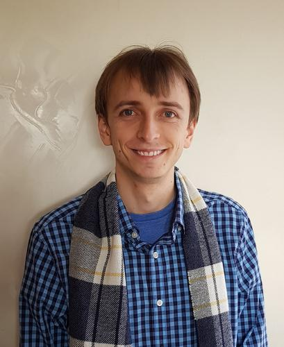

I am postdoctoral researcher at Sorbonne University, in the ISIR laboratory, since november 2024. I've successfully defended my Ph.D. in September 2024, specializing in making deep learning models for computer vision more interpretable. My research interests is mostly Computer Vision, with extensive research experience in explainable AI, robustness against adversarial perturbations and video and image generation.
Throughout my academic path, I have published novel research in top-tier computer vision conferences (CVPR, ECCV, WACV, ACCV).
Outside of my research, you'll likely find me playing bass, listening to music, eating, or playing video games :).